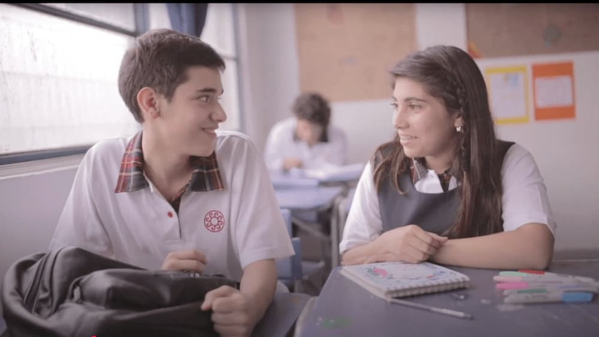
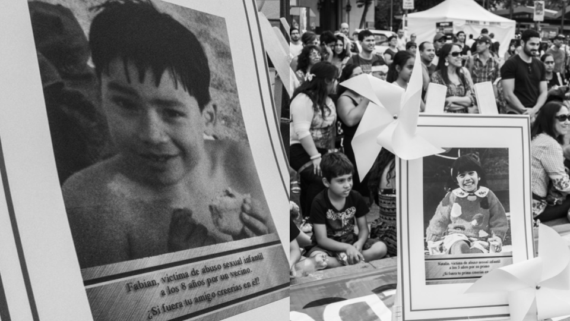
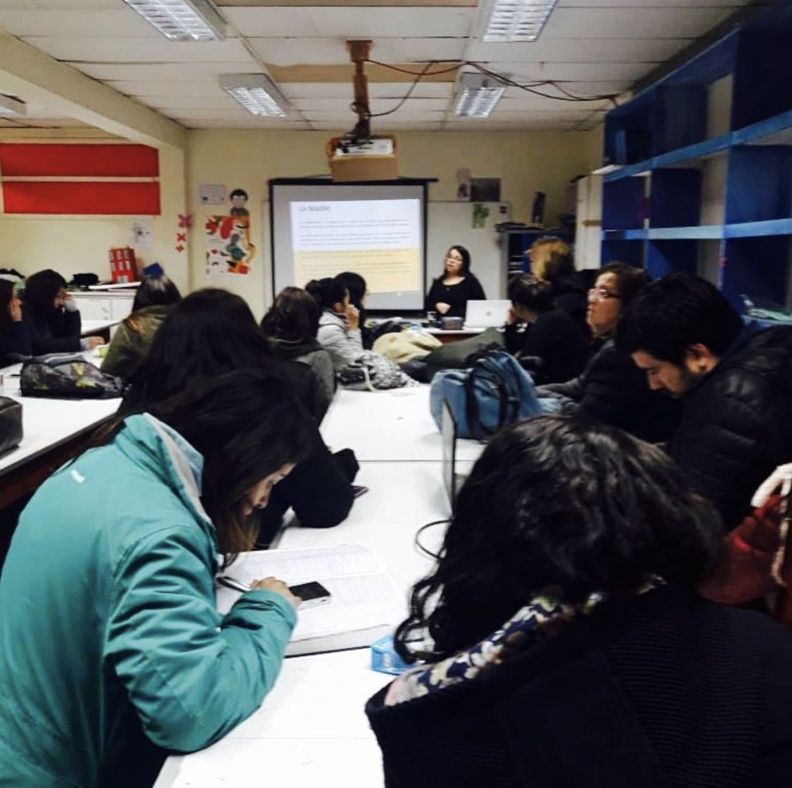
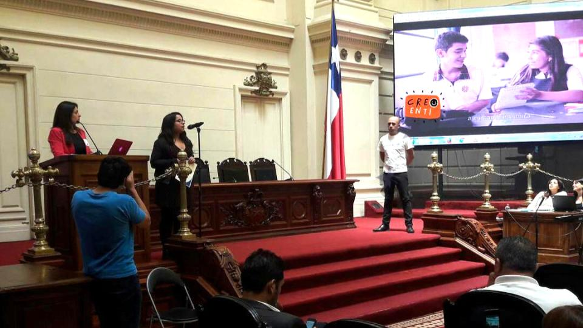
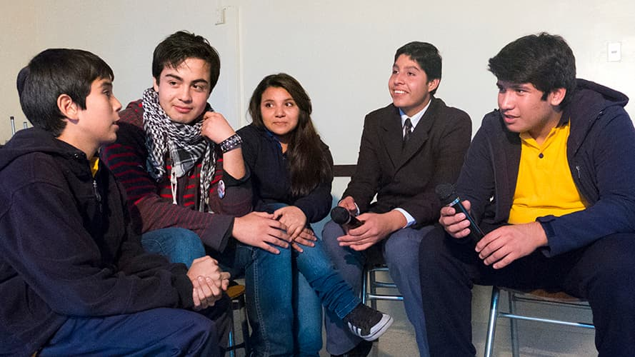
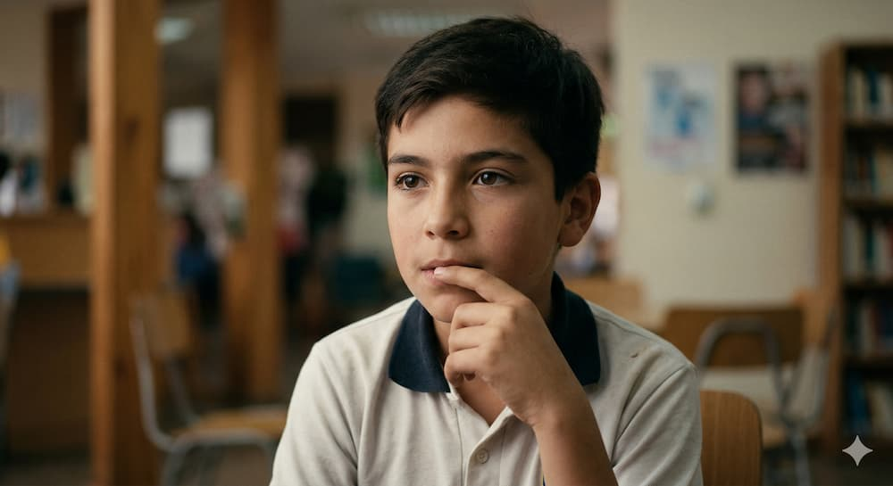
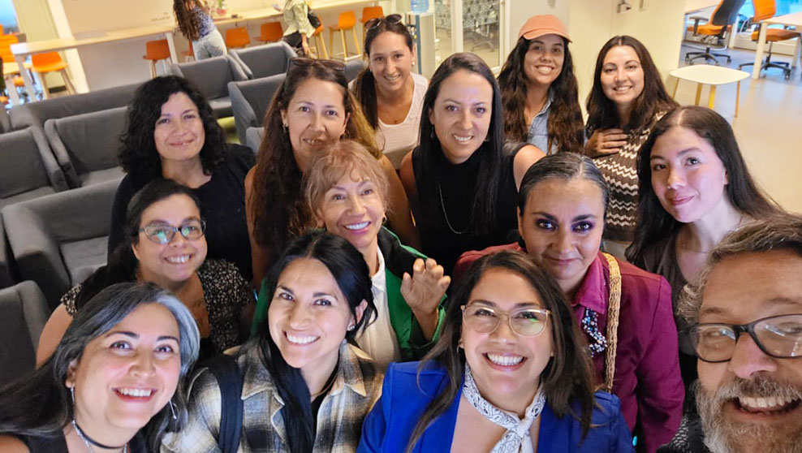

Creo en ti: Potenciando la Confianza a través del Talento
Transformando el miedo en seguridad mediante la transformación de experiencias y el autoconocimiento.
"Creo en ti" es un emprendimiento de impacto social enfocado en prevenir vulneraciones mediante el fortalecimiento de la confianza y el desarrollo de talentos en la infancia y adolescencia. En un contexto donde el 39% de las mujeres y el 18% de los hombres reportan haber sido víctimas de abuso antes de los 18 años (fuente Fundación Para la Confizanza 2018), este proyecto se aleja del enfoque tradicional del miedo para utilizar la creatividad, la vocación y el acompañamiento como herramientas de empoderamiento. Mi rol ha sido liderar el proceso de diseño end-to-end, evolucionando desde una solución digital hacia un modelo de servicio integral y omnicanal.

Espacio para Imagen: Hero del Proyecto / Logo
'">
Hitos de Impacto: Del Activismo al Diseño
Antes de su estructuración como servicio digital, el proyecto se validó a través de intervenciones físicas y de concientización que movilizaron a la comunidad y permitieron levantar insights fundamentales:
Intervenciones de Alto Impacto: Realización de la instalación artística "Animitas" —que visibilizó la pérdida de la inocencia en el espacio público— y actos de repudio contra el día del orgullo pedófilo.
Validación Educativa y Redes de Apoyo: Creación del video educativo "Creo en ti". Este material fue presentado en el Salón de Honor del Ex Congreso Nacional, durante una ceremonia organizada por la ONG Red Infancia Chile, compartiendo espacio con diversas organizaciones destacadas en el trabajo a favor de la prevención y protección de la infancia.
Presencia en Comunidad: Talleres de prevención para adultos y jóvenes que sentaron las bases metodológicas del servicio actual.

Intervención Animitas
'">
Intervención Urbana "Animitas"

Intervención Repudio
'">
Taller de prevención en colegio San Benildo

Presentación Ex Congreso
'">
Exposición en Ex Congreso Nacional
Vídeo Creo en ti
Metodología: De la Empatía al Ecosistema de Servicio
Para transitar desde un problema social complejo hacia una solución tangible, estructuramos el proceso bajo la metodología de Design Thinking. Este enfoque iterativo nos permitió sentar las bases del Diseño de Servicios (Service Design): mapeando actores, analizando el entorno mediante herramientas como el Scope Canvas, y orquestando puntos de contacto físicos y digitales para garantizar un entorno psicológicamente seguro.
Fase 1
Investigación Estratégica y Etnografía
Entender el entorno para diseñar con sentido.
Ralizamos un levantamiento etnográfico cualitativo en el Colegio San Benildo de Recoleta.
Hallazgo clave: El miedo al juicio ajeno es la principal barrera para expresar el talento.
Stakeholders: Entrevistas con especialistas para integrar la "terapia grupal" de forma orgánica en talleres recreativos.

Imagen: Etnografía / Entrevistas
'">
Fase 2
Perfilamiento y Reto Estratégico
El reto de la confianza.
Construimos arquetipos basados en nuestra investigación, como Sebastián (12 años), quien busca refugio para sus intereses pero carece de un entorno que lo motive sin exponerlo a conflictos.
El Problema: Los adolescentes anhelan lazos de amistad y compartir talentos, pero carecen de un entorno seguro.
El Reto: ¿Cómo diseñar una comunidad donde la confianza sea el eje central del aprendizaje entre pares?

Imagen: User Persona / Scope Canvas
'">
Fase 3
Modelo de Negocio y Arquitectura
Estructurando la solución omnicanal.
Desarrollamos un modelo que conecta a facilitadores, apoderados (quienes financian) y adolescentes. Definimos la arquitectura inicial enfocada en una navegación simple y segura.
Sostenibilidad: Uso de herramientas de innovación para validar la viabilidad del servicio.
Arquitectura: Mapeo de contenidos para talleres B-Learning y mentorías.
Fase 4
Prototipado y Habilitador Digital (MVP)
De la estrategia a la interfaz.
Diseñamos un MVP web centrado en la transparencia y cercanía. Creamos un lenguaje visual vibrante que transmite modernidad y, sobre todo, seguridad para el usuario final.
UI Kit: Basado en tipografías como Titan One y colores que inspiran energía y confianza.
Flujos: Inscripción sin fricción desde redes sociales o WhatsApp hasta la vivencia del taller.
Fase 5
Iteración y Futuro: Hacia una Solución Escalable
Actualmente, el proyecto se encuentra en una fase crítica de iteración y validación constante. Como becaria del programa INNPULSA MUJER STEM (impulsado por Mujeres del Pacífico, CORFO y Open Beauchef de la Universidad de Chile), estoy trabajando en la escalabilidad tecnológica y financiera de "Creo en ti".
Mi objetivo es evolucionar este MVP hacia un modelo de Service Design robusto, donde los protocolos de seguridad, el acompañamiento de mentores y la plataforma digital funcionen como un solo ecosistema sostenible. Trabajamos para que cada persona joven se reconozca como dueña de su propia historia, potenciando su talento desde la libertad creativa.
Mi hoja de ruta en el programa incluye:
Mapeo del Ecosistema: Profundizar en las necesidades de todos los actores involucrados (stakeholders), no solo del usuario final, para entender cómo colegios y familias se integran al servicio.
Service Blueprint: Diseñar el "detrás de escena" (backstage). Más allá de la plataforma digital, establecer los protocolos de seguridad, soporte psicológico y metodologías que sostendrán los talleres.
Modelo de Sostenibilidad: Utilizar las herramientas de innovación del programa para validar la viabilidad del negocio y preparar el pitch deck final.
Iteración del MVP: Finalizar el programa con un Producto Mínimo Viable iterado, omnicanal y listo para ser probado en un entorno real, asegurando que cada punto de contacto genere la confianza necesaria.

Espacio para Imagen: Marion en Laboratorio de Innovación / Pitch Deck